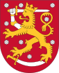

Герб
Державним гербом Фінляндії є коронований лев із піднятим над головою мечем, який топче криву шаблю.
Історія
- 1155 — перші місіонери прибувають до Фінляндії зі Швеції. Фінляндія стає частиною Шведського королівства.
- 1809 — Фінляндія відходить від Швеції до Росії і стає частково автономним Великим Князівством під владою російського царя
- Грудень 1917 — проголошення незалежності Фінляндії
- 6 грудня 1917 — Фінляндія проголошує незалежність від Росії
- 1919 — після затвердження нинішньої конституції Фінляндія стає республікою з президентом на чолі держави.
- 1939 - 1940 — Радянсько-фінська (або Зимо́ва) війна (1939-1940)
- 1941 - 1944 — Радянсько-фінська війна (Війна-продовження, або Каре́льська кампа́нія) (1941—1944)
- 1955 — Фінляндія стає членом ООН.
- 1995 — Фінляндія вступає до ЄС
- 2022 — подача заявки на вступ до НАТО
- 4 квітня 2023 – стає повноцінним членом НАТО